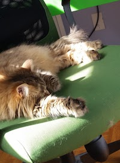

Chromium Alt Text Replication Issue
1. Original Markup Contains Full Alt Text
<img src="sunCat.jpg" alt="A cat lying in the sun on a green chair." />

2. Original Markup Contains Blank String Alt Text
<img src="sunCat.jpg" alt="" />
3. Original Markup Contains Alt Attribute with no Value
<img src="sunCat.jpg" alt />